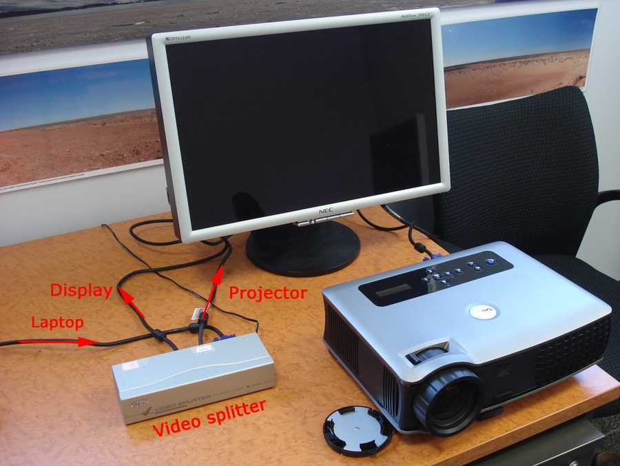

FAQ: Spherical mirror projection
|
Projectors |
Software |
Mirrors |
Dome |
Content |
Other |
| Projector related |
Can I use any data projector?
No. The key requirement that a data projector needs to meet is focus. For a 60cm spherical mirror the projector needs to be able to focus to an image that is between 40 and 50cm wide. Unfortunately this is not something a projector manufacturer generally quotes since their clients don't normally want such a small image. The only way to be sure of a particular projector is to test it, I strongly recommend not purchasing before testing whether it will focus. In my experience about 50% of commodity projectors will meet the focus requirement. [See other desirable projector requirements]. The test in the absence of doing so in a dome with a mirror is to point the projector at a flat wall and using a combination of the projector distance from the wall and zoom, can a 45cm wide in focus image be achieved.
What is the difference between a projectors native resolution and maximum resolution?
The only thing of importance is the native resolution of the projector, this will typically be one of the following: 1024x768, 1280x1024, 1400x1050, 1920x1080. It is this resolution that the computer should be configured to output for optimal results. In particular, there is no point configuring the computer to output a resolution higher than the native resolution of the projector, indeed in most cases the image quality will be poorer.
This is often a point of confusion, to repeat, just because an XGA (1024x768) native projector can accept a higher resolution signal doesn't mean one gets a better result. Indeed because scalars in projectors are generally quite poor you will often get an inferior result than if you used the native resolution.
What are the projector characteristics I should look for? In order of decreasing importance (personal preference).
The projectors native resolution. In pixels this will most likely be one of the following 1024x768 (XGA), 1280x1024 (SXGA, less common now), 1400x1050 (SXGA+), 1920x1080 (HD).
The degree to which the projector will project "nothing", in other words black. An indication of this is given by the contrast ratio of the projector but this is an attribute often abused by manufacturers, with poor standards on how it is calculated. Ideally one is looking for rating above 2000:1. This is often low for LCD projectors.
The screen door effect, that is, the width of the gaps between pixel elements. This is most often a problem with LCD projectors.
Colour quality and colour space. This is a very hard attributed to judge without direct side-by-side access to the projectors and some experience adjusting their colour controls. For those running Apple Macs the built in colour calibration can go a long way towards improving the result, read more. If you are choosing a projector that is targeting the professional market, choose one with a colour wheel designed for visualisation applications, in general this will be a colour wheel with more segments.
Brightness. This is not as important as it might seem, at least not for planetarium style operation since one is generally operating in pitch black and our eyes have a wonderful response. This is also an attribute abused by manufacturers and you should not place to much trust in their rated values. In particular, it is often boosted in DLP projectors by including a white segment in the colour wheel ... something one usually turns off in order to achieve a better colour space.
Noise, generally due to cooling fans.
Size and weight.
Are some aspect ratios better than others?
Yes. Unlike fisheye lens projection where a square aspect ratio is better, for spherical mirror projection 16:9 (wide angle) aspect ratios give better pixel usage. This is convenient since the commodity projector market is increasingly supporting 16:9 aspect ratios.
What are some known projectors that will focus?
Assuming the standard 60cm spherical mirror, the author has used or is aware of the following projectors that work well with the spherical mirror approach. Please note that I do not recommend XGA (1024x768) resolution projectors and as of 2012 I also don't suggest SXGA+ (1400x1050) given the now ready availability of HD (1920x1080) or WUXGA (1920x1200). While WUXGA (1920x1200) may seem better than HD, since the height of the image is rarely used, the result is generally the same as HD resolution.
One of the problems of such a list, that has been running since 2004, is that many of the projectors are no longer in production. An addiitonal column has been added to show the date the projector was used.
| Make/Model | Resolution | Lumens (Rated) | Technology | Comments | Year used |
| Canon XEED WUX4000 | WUXGA | 4000 | LCoS | Standard lens | |
| Canon XEED WUX5000 | WUXGA | 5000 | LCoS | Horizontal and vertical lens shift. | 2016 |
| Epson 1980wu | WUXGA | 4400 | 3LCD | Contrast ratio 10,000:1 | 2014 |
| Epson EB-U32 | WUXGA | 3200 | 3LCD | ||
| Epson Powerlite 3020 | HD 1080 | 2300 | 3LCD | ||
| Epson EMP-TW 1000/2000 | HD 1080 | 1200/1600 | 3LCD | ||
| Epson Powerlite Pro Cinema 1080UB | HD 1080 | 1600 | 3LCD | ||
| Epson Powerlite Home Cinema | HD 1080 | 2400 | 3LCD | ||
| Epson Powerlite 8350 | WUXGA | 2000 | 3LCD | ||
| Epson Powerlite Pro G6750 | HD 1080 | 6000 | 3LCD | ||
| Epson EH-TW9200, Epson PowerLite Pro Cinema 6030UB0 | HD 1080 | 2400 | 3LCD | ||
| Epson EH-TW9200W, Epson PowerLite Pro Cinema 5030UB0 | HD 1080 | 2400 | 3LCD | ||
| Epson EH-TW9100, EH-TW9100W | HD 1080 | 2400 | 3LCD | ||
| Epson EH-TW6600 | HD 1080 | 2500 | 3LCD | ||
| Epson EH-TW6000, Epson PowerLite Home Cinema 3010 | HD 1080 | 2200 | 3LCD | ||
| Epson EH-TW6100, Epson PowerLite Home Cinema 3020 | HD 1080 | 2300 | 3LCD | ||
| Epson Home Cinema 3700 | HD 1080 | 3000 | 3LCD | Horizontal and vertical lens shift | |
| Epson EH TW 9300 | Psuedo 4K | 2500 | 3LCD | Horizontal and vertical lens shift | |
| Epson Pro EX9220 | WUXGA | 3600 | 3LCD | ||
| Epson Pro L1060U | WUXGA + 4K enhancement mode | 6000 | Laser Phosphor | ELPM15 lens for 4m iDome | 2021 |
| Projection design Cineo3+HD | HD 1080 | 3500 | DLP | Best with the EN14 lens | |
| Projection design F35 VizSim | WUXGA | 4500 | DLP | Used with the EN14 lens | |
| Optoma UHZ65 | 3840x2160 | 3000 | Laser phosphor | 15% vertical | 2021 |
| Optoma ZU660 | 1920x1200 | 6000 | Laser Phosphor | BX-CAA03 for 3m iDome | 2021 |
| Optoma HD20 | HD 1080 | 1700 | DLP | No lens shift, standard lens is short throw 1.2:1 | |
| Optoma HD141X | HD 1080 | 3000 | DLP | No lens shift, standard lens is short throw 1.1:1 | |
| Optoma HD81-LV | HD 1080 | 2500 | DLP | ||
| Optoma EP1080 | HD 1080 | 3600 | DLP | Same as the Optoma TX1080, the USA branding. | |
| Optoma EP1060 | HD 1080 | 3600 | DLP | Same as the Optoma TX1080, the USA branding. | |
| Optoma HD803-LV | HD 1080 | 2000 | DLP | Not as bright as the Optoma EP1080 but better colours. | |
| Optoma TH1060 | HD 1080 | 4500 | DLP | ||
| Optoma EH2060 | HD 1080 | 4000 | DLP | ||
| Optoma TH7500 | WUXGA | 6000 | DLP | Tested ST1 and TZ1 lenses, later has better depth of focus and range. | |
| Optoma TH7700 | WUXGA | 7000 | DLP | Same lens comment as above, TZ1 required for 3m iDome | 2013 |
| Optoma EH505 | WUXGA | 5000 | DLP | Lens: BX-DL300 long throw. (Suitable for 3m iDome) | 2014 |
| Optoma EH501 | WUXGA | 5000 | DLP | 2014 | |
| Optoma HD27 | HS | 3400 | DLP | ||
| DELL 7609WU | WUXGA | 3800 | DLP | Capable of short focus and has lens shift | |
| BenQ W6000 | HD 1080 | 2500 | DLP | High contrast ratio and lens shift | |
| Vivitek H1085FD | HD 1080 | 2000 | DLP | ||
| Panasonic PT-AE4000/PT-AE3000 | HD 1080 | 1600 | 3LCD | ||
| Panasonic PT-EZ570e/PT-EZ570u | WUXGA | 5000 | 3LCD | ||
| Acer P7500 HD | HD 1080 | 4000 | DLP | ||
| Mitsubishi HC3200 | HD 1080 | 1100 | DLP | ||
| Mitsubishi UD8400U | WUXGA | 6500 | DLP | Horizontal and vertical lens shift. | |
| Mitsubishi FL6900U | HD 1080 | 4000 | DLP | Horizontal and vertical lens shift. | |
| Sony VPL FH30 | WUXGA | 4300 | 3LCD | Horizontal and vertical lens shift. | |
| Sony VPL FH35 | WUXGA | 5300 | 3LCD | Horizontal and vertical lens shift. | |
| Sony VPL FH500 | WUXGA | 7000 | 3LCD | Horizontal and vertical lens shift. | |
| Sony VPL VW600ES | 4K | 1600 | SXRD | Horizontal and vertical lens shift. | 2016 |
| NEC PA500U | WUXGA | 5000 | 3LCD | NP132L lens, Horizontal and vertical lens shift. | |
| NEC PX750U | WUXGA | 7500 | DLP | Horizontal and vertical lens shift. | |
| JVC DLA-400 | 4K (3840 X 2160) | 1700 | D-ILA | Horizontal and vertical lens shift. | 2019 |
| JVC DLA-RS66 | WUXGA | 1200 | D-ILA | Horizontal and vertical lens shift. | |
| Hitachi CP-WU8440 | WUXGA | 4000 | DLP | Horizontal and vertical lens shift. Standard lens is the ML703 which is long throw so projector is about 1.4m back from the mirror. | |
| Hitachi CPWU5505 | WUXGA | 5200 | 3LCD | Horizontal and vertical lens shift | |
| Viewsonic PJD7820HD | HD | 3000 | DLP | ||
| Viewsonic PX727-4K | 3840 x 2160 | 2200 | DLP | ||
| Infocus IN3118HD | HD (1920x1080) | 3600 | DLP | Used this with a small 30cm mirror. | 2016 |
| Infocus SP8600 | HD (1920x1080) | 1800 | DLP | 2021 | |
| Barco F80 4K12 | WQXGA+, wobulation to 3840x2400 | 12000 | Laser phosphor | GLDÂ Lens 2.12-3.18 lens for 3m iDome. Require lens plane adjustment | 2020 |
Since there are only a finite number of projectors I can test, I would welcome feedback and additions to the above list. If you are a manufacturer/distributor of projectors that may be of interest to this community then I'm happy to test the suitability of new models.
What does lens offset refer to in projector specifications?
Except for very special short throw lens the projected image is not centered on the lens of the projector (zero lens offset). For the vast majority of commodity projectors the image is raised on the lens, typical lens offsets are between 90% and 110%. A 100% lens offset sees the base of the image pass through the center of the lens. Some projectors have a mechanical lens shift option, this allows the user to vary the degree of lens shift while retaining a rectangular image on a flat projection surface.
Lens offset is relevant for spherical mirror projection into planetarium style domes because it impacts on the relative projector/mirror height in order for the light refected off the bottom rim of the mirror to pass over the top of the projector on its way to the spring line of the dome.
How do I configure/choose my projector for optimal image quality
This is a difficult question since almost no two projectors are the same. It goes without saying that you should be providing a video signal to the projector at the native resolution of the projector, supplying a higher resolution is pointless and may in many cases result in poorer image quality, supplying an image of lower resolution mean that you are not fully utilising the resolution the projector is capable of.
Some projectors have a "white boost" which can also go by different names. In general it is my advice to turn this off. While it may seem to give a lower brightness image it will (should) give a better colour response.
Perhaps the most important thing for improved colour quality is to use the Apple colour profiles, read more.
Which Apple Mac should I buy for a particular projector resolution? Does it even matter?
There are two considerations, performance and screen resolution. The simplest is performance, that is, given a particular projector resolution and the matching fisheye resolution can the machine (and graphics card) play the movies smoothly? At the time of writing this (late 2008) and in my experience I suggest avoiding any Apple Mac with a "no-name" embedded graphics card (eg: Mac Mini). The Macbook and iMac range can readily be used for XGA and SXGA+. Higher end iMacs and Mac Pro is required for HD resolution.
There is however a second consideration. Be aware that in all dome projection there are never enough pixels on the dome, as such while there are lots of other factors it is important to fully utilise the resolution of the chosen projector. So for example there is not much point investing in a SXGA+ projector if you don't use as many of the pixels possible.
This seems common sense so why mention it? It turns out that on Apple Macs (and other computer systems as well) when in operated in mirror mode the lowest resolution display is used and the result scaled to the second display. An example: at the time of writing, a 15" MacBook Pro has an internal display resolution of 1440x900. If this were connected to a SXGA+ (or HD) projector and operated in mirror mode then the effective resolution of the output display would be at most 1440x900. While the output display may be set to 1400x1050 (SXGA+) the image will be a scaled up version of the internal display and thus not as high resolution as it might be. Please note that this is the correct behavior, the scaling of the lower resolution to the higher resolution display in mirror mode is the best strategy for the OS to use.
So what are the implications?
The obvious option is to always have a builtin display or monitor that is the same or higher resolution than the output display (the one that goes to the projector). For example, the current 20" iMac has an internal resolution of 1680x1050 so it can be used to drive a SXGA+ (1400x1050) projector system but would not be optimal for a HD projector system (1920x1080). Similarly the current 15" MacBook Pro has an internal display of 1440x900 so can not optimally drive a SXGA+ (1400x1050) projector, see subsequent comments.
The issue with the iMac series is that they have a builtin display and to the authors knowledge there is no way to disable that display. However a Apple Notebook can be booted with the lid closed in which case the internal display is disabled and the output display can be configured to the native resolution of the projector. The problem with this is that one only has the dome image in which to navigate, this may be OK with a suitable fulldome menu/navigation system but may be "messy" otherwise.
A solution to the single display laptop problem above is to use a video amplifier/splitter (about $100). As above, the laptop (this probably only works for Apple laptops) is booted, the display shut and it will then acquire a external display resolution matching the projector. This still requires that in order to get the optimal resolution that the external display used is at least the same resolution as the projector resolution. Note that most video splitters will have a single DDC video port, this should be used for the projector in order for the computer to choose the projector resolution rather than the display resolution.
 In the case of a Mac Pro there is no internal display but the same rules apply, the external display that is attached must be at least capable of the same resolution as the projector resolution ... at least if you want optimal results.
One final word. Some suppliers use a "screencopy" technique. In this case the two displays are not used in mirror mode so the issues discussed above may not seem to be a problem since both displays are operated at their native (and optimal) resolution and the computer can honour that. The fisheye projection on one display (the computer) is copied and warped to the other display (the projector). Note that this does not actually solve the problem of getting an optimal result, indeed it generally results in significantly inferior results. For example consider the 15" MacBook Pro, for "screencopy" the fisheye is only rendered at 900 pixels square and then warped to the projector resolution. For an SXGA+ projector the fisheye resolution before warping should be around 1400 square and for HD around 1600 square. In order for the "screencopy" technique to create optimal resolution results it would also need displays that match these resolutions in height.
| Computer/software related |
What software packages use the standard warp maps
Developers, please note that supporting the standard warp map files has significant advantages to the existing user base. If a site goes to the trouble to creating a precise mapping then all software can use that warpping. This is in contrast to developing a different approach to describing the warping required. Please inform me of others so I can add them.
| Software name | Platform | Category | Comments |
| WarpPlayer | Mac | Movie playback | Warps fisheye movies on the fly |
| TheSkyX and Seeker | Mac and MSWindows | Interactive | Only available in the Theatre Editions |
| pbmesh | Mac | Interactive | Warping support for Quartz Composer |
| Unity3D | Mac, MSWindows | Interactive | This is targetted at content development for games and virtual environments |
| Blender Game Engine | Mac, MSWindows, Linux | Interactive | This is targetted at content development for games and virtual environments |
| Quest3D | MSWindows | Interactive | This is targetted at content development for games and virtual environments |
| Amateras | Mac and Windows | Movie show controller | Excellent movie show controller with lots of additional capabilities |
| WorldWide Telescope | MSWindows | Interactive | Virtual Telescope |
| TGAWarp and JPGWarp |
Mac MSWindows |
Utility |
Used to prewarp fisheye frames Provided by Lochness Productions |
| OmniMap | MSWindows | Software API | Not yet verified/tested by the author |
| meshmapper | Mac | Utility | Creates precise warp maps |
| Fulldome plugin | MSWindows | Compositing (AfterEffects) | Not yet verified/tested by the author |
| Domeview | MSWindows | Movie playback | Not yet verified/tested by the author |
What compression codec should I use?
In my opinion one should be using codecs that result in minimal image degradation. Fulldome projection using a single projector is "pixel challenged" enough without making it worse by using visually lossy compression. For this reason I personally avoid all lossy compression methods for images (eg: jpeg) and use TGA or PNG exclusively. For movies I avoid anything based upon MPEG or AVI, these and many other lossy codec are designed for low bandwidth internet movie sharing, this is not a requirement for fulldome projection that is always run off a local hard drive.
Since my warp-on-the-fly software is designed for Apple Macs I tend to use the PhotoJPEG codec for large fisheye movies with quality setting on "high". Not only does this codec seem to decompress large image sizes with current CPUs but it is a frame by frame codec so one can move forward and backward without penalty. My next choice is H264, much smaller movie footprint and only rarely (smooth colour washes) do compression artifects reveal themselves.
Having said that, one of the benefits of using QuickTime is the wide range of codecs some of which are suited to different content types, cartoon vs CG, vs real life video. The codecs can even be mixed and matched within reference movies.
I have a series of fisheye frames, how do I create a movie?
There are a large number of options, the one you use depends on your hardware playform and just how sophisticated you need to be, for example, do you need to add transitions, composite additional material, etc. If your needs are modest then my preference is simply QuickTime Pro. This allows one to import large series of images as the movie frames, cut/copy/paste movies together, add audio, and a range of other tasks including of course exporting the result to a movie file using a particular codec.
Will "warpplayer" be ported to MSWindows?
Very unlikely. My "warpplayer" application leverages key aspects of Apples QuickTime and OpenGL in order to play very high resolution movies (easily 2Kx2K on current standard hardware) with minimal compression artefacts. It is unlikely that equivalent performance could be obtained on the MSWindows platform without a total rewrite.
How do I write realtime applications?
This is certainly outside the scope of this FAQ. If you are an OpenGL or Direct3D competent programmer then I can convey (and probably provide source code snippets) on how to convert or write fisheye capable programs including the warping required for spherical mirror projection.
Elumenati have a free API for Direct3D and OpenGL. This will hopefully support warped fisheye in the next release.
What is colour calibration all about?
The underlying fact is that every digital display is able to
- represent a slightly different range of colours.
- has a different mapping between r,g,b pixel values and the final displayed colour.
This mapping is a very complicated affair so I'll just limit myself to discussion of gamma (and a simplistic discussion at that), which conveniently will get you most of the way to images on the dome that match those of your computer (or at least the computer of the person who created the content). The gamma value of the display relates to how a pixel value maps to eventual brightness. It is a power law, that is, pixel value scaled to the range 0 to 1 raised to some power to get the relative intensity also on the range 0 to 1. So the fundamental problem is that if content is created and previewed on a display with a particular gamma value, it will look different when viewed on a display with a different gamma value. Typically either it will appear too dark (low contrast), or over saturated.
The problem with commodity projectors is that they tend to have a very high gamma value, 3 or 4 is not uncommon. Whereas most displays we use on computers have a gamma around 2.
But all is not lost, it is possible to modify the pixel values to compensate for the effect of a different gamma value. For those using a spherical mirror this is not unlike the principle of distorting (warping) the fisheye image such that the result on the dome is correct geometrically. Colour calibration determines how one needs to distort the colours of the images such that when presented on one display the image looks the same as it did on the "reference" display. In both case the distortion can be done in realtime, during playback.
There is so much more to all this but that will be left as an exercise for the reader to investigate. For example, in an ideal world a content producer would supply not just a fulldome movie but also the colour profile of the device it was created/previewed on. The playback institution would similarly have a colour profile for their display (the dome projection system), a correction can then be applied to ensure the result on the dome matches as closely as possible the view the content creator had on their display or dome. This is not new by the way, the print industry has been doing this for years to match their printers to their displays.
Both Mac and MSWindows have colour calibration software at the operating system level. This means all drawn graphics can be colour corrected rather than the application software needing to worry about it. On the Mac this is a very clean and well integrated process and is accessed though the display preferences, see the colo(u)r tab. Under MSWindows it isn't quite so clean with some limited control supplied by the OS and others within the driver interface. In any case, if you haven't already done so I strongly recommend paying some attention to this, as mentioned above while the colour correction can be a complicated affair and some of the process doesn't really apply to domes ... in general significant improvements can be made by simply correcting for the gamma value.
ps: Adjustments on some projectors go hand in hand with this since some projectors will do gamma correction internally. For example "presentation" mode is often a very high gamma to get the most out of the whites. "Film" settings are generally lower gamma but some people don't like using that because the image looks dimmer. Projectors also often complicate things by having a "white boost" which again make office presentations look better with brighter whites, but plays havoc if you want a good dynamic colour range. It goes on and on, and a topic for another day.
Colour CalibrationPerhaps the most important tool in improving the colour quality on the dome is to use colour profiles, these are available for other computer systems but software to create profiles is built into the Mac OS-X. Colour profiles are a means of ensuring different display devices all have the same colour appearance.
By far the most important setting is the displays (in this case the projector) native gamma, this is because in general commodity projectors have a very high gamma value compared to computer displays. This is not the place to discuss gamma but in summary it defines the relationship (a power law) between pixel values and brightness.
The colour calibrator on Mac OS-X is found in the "systems preferences" in the display panel. In general the expert mode is not necessary but you should feel free to experiment.
Can you tell how to choose which warpmesh to use in the 6 metre dome?The main thing is the aspect ratio of the projector you are using, assuming you are driving it with a computer that is the same aspect ratio. For data projectors there are the following aspect ratios
- 4x3, is normally 1024x768 pixels, I don't recommend people use this for fulldome
projection. There are less common 1400x1050 pixel projectors.
- 16x9, this would normally be 1920x1080, the standard recommended resolution for
spherical mirror projection. There is 1280x720 which I also do not recommend.
- 16x10, this is less common and is normally 1920x1200 pixels. Doesn't give any real advantage over 1920x1080.
I have supplied samples of each of these with the warpplayer download. The size of the dome is not relevant. These are canned warp mesh files, you adjust the hardware to get a result that covers your dome. The other approach is to use meshmapper (supplied with warpplayer) and create your own warpmesh file. Not a simple job but the way to get the best results for your hardware.
| Mirror related |
Where can I source a spherical mirror from?
If you want a standard spherical mirror do a google search for keywords "safety mirror" or "security mirror", you will find lots. Refine the search to your country domain and hopefully there will be a local importer. I suggest 60cm size [See question on mirror size]. These mirrors will not be first surface, that is, the mirror coating will be on the back of the mirror. The above will work for testing but the quality will be severely compromised, due to multiple light passes through the clear substrate and refraction.
The current recommended source for mirrors is
WWW: http://www.acrilconvex.com.au/firstsurface.html
Product model: 20534 60cm First Surface Half Dome Mirror with Polymer Coating.
I normally suggest people get a standard (not first surface coated) mirror first from a local supplier (try to get the same 60cm version) and then once they are familiar with the technology buy the better mirror and reap the quality improvements.
What is the best mirror size?
The trade off is between a small mirror that limits the impact (and cost) of the spherical mirror on the space in the dome and the ability of the projector to focus on the small image required. In general I recommend 60cm mirrors as a good compromise. The size of the mirror is not determined by the size of the dome. I use the same mirror on domes from 2m diameter to 20m diameter. There are two problems choosing a smaller mirror
- Fewer projectors will focus.
- There are no known first surface mirrors available in smaller size.
Is a full half hemispherical mirror required?
No, in the usual configuration less than half a hemisphere is required. You can imagine why this is the case, if the mirror is near the rim of the dome then only that part of the mirror is required that reflects the projected light by 90 degrees.
The plans of the mirrors used by the author are shown here: mirrorshape.pdf.
The official dimensions from the manufacturer.
Are there other types of mirror besides the current security based ones?
I have investigated polished stainless steel mirrors, the trick with them is getting a good spherical shape and the cost is significantly higher. In the past I have investigated spray chromed mirrors, worked OK but were even more fragile than the current mirrors, an even protective coating was never perfected. Some have tried a "beryl" finish (beryllium aluminium cyclosilicate) but it is more expensive than the current solution.
There is still scope in this area for improvement, if you think you have a means of creating better mirrors then please contact me. Note that at the moment the mirror quality is sufficient, the limitation is the delicacy of the surface. When considering a protective layer it needs to be very thin and applied very evenly otherwise caustics will occur.
I notice there are a lot of unused pixels, is there a mirror shape that uses more of the available pixels?
Yes, there are other shapes than spherical that would use more pixels, it is also possible to derive an optimal shape given a particular projection surface shape and projector aspect ratio. It has been hard enough finding a suitable mirror coating without complicating matters with other shapes. Needless to say this improvement is on the books.
Note that while not directly related to this FAQ, the situation in the fisheye world is the same. A fully inscribed fisheye in a 4:3 aspect rectangle also wastes lots of available pixels. For this reason many fisheye lens solutions use a truncated fisheye. A similar custom fisheye lens might conceivable be formed that was elliptical, people are working on this but no products yet, at least not for projectors.
To what extent does the projector encroach upon the space in the dome?
For the standard configuration, which sees the mirror against the side of the dome and the projector in toeards the center, perpendicular to the mirror, then in general the mirror is about 1m from the mirror.
This is how I generally set things up but some others have found a nice way to reduce this by 50% by adding a second planar mirror to fold the light path. In this case the projector resides underneath the mirror. E-Planetarium provide a solution called the "Newtonian" for inflatable domes which not only provides a very compact unit but also serves as a portable carry case.

In a fixed dome there can be issues of safety when supporting a heavy projector within the dome area. Jack Dunn of the Mueller planetarium has also implemented a folded light path system. Note that this planar mirror does not affect the focus requirements nor does it change the image warping required. The only trick is ensuring the light passing above the planar mirror reaches the opposite point at the spring line of the dome.
 |
 |
The following is an example of the optical layout for the Optoma EH2060 projector, currently (May 2012) perhaps the best value for money HD projector with 4000 ansi lumens at under $1500.
| Dome related |
Where is the ideal position for the mirror and projector in the dome?
There are no hard and fast rules but to maximise the dome coverage the mirror is normally placed quite close to the rim of the planetarium dome. This allows the majority of the dome to be projected onto, in reality the fact that 100% coverage isn't generally achieved is not a significant problem if only because in most domes and most movie content is intended for directional seating/viewing. The position does depend on the dome orientation but the following two diagrams show the usual position for two extreme situations, a horizontal and a vertical dome.
Can I use my existing StarLab dome for fulldome digital projection?
You can but the old StarLab domes were never designed for this. As such they tend to be more reflective than is ideal and their surface is very crinkly. So it is a matter of cost (existing) versus final image quality. There are a number of inflatable dome suppliers who now have products much more suited to digital fulldome projection. [See comments on seamless domes]
What is the best reflectivity of the dome surface?
Contrary to many peoples initial thoughts, a white surface is definitely not the best. One characteristic/problem of digital projection into hemispherical domes is multiple reflections of light within the dome. This results in low contrast images and more directly, lightening of a dark regions by bright objects in other regions. For domes that will be used for fulldome digital projection a reflectively of 50% should be considered a maximum.
I've used the spherical mirror in a small dome, what resolution projector do I need for a large fixed planetarium?
An interesting question. All other things being equal, the size of the dome doesn't matter. By that I mean, the perceived resolution on the dome doesn't change as the size of the dome changes. The perceived resolution is the angle a pixel subtends at the eye, in a small dome the pixels are smaller but closer to the eye, in a large dome the pixels are larger but further away ... the angle the pixel subtends at the eye is the same. In reality, for a given projector resolution the effect on a large planetarium dome will be better than in a small inflatable (say) dome because in general the dome surface for the planetarium dome will be better.
What is the smallest sensible dome for digital fulldome projection?
This depends on the application, for single person domes I suggest 3m is about the smallest. The old visionstation by Elumens (no longer available) was 1.5m and while the spherical mirror has been used it isn't ideal. My dome shown below is 3m diameter but as you see it is orientated differently to planetarium domes. The smallest inflatable for a dome orientated as the usual planetarium I recommend is 5m, an example is shown below. 5m seems to be a comfortable size for half a dozen adults, and a dozen children.
It is interesting to note that when the mirror is placed close to the edge of a planetarium style dome, the warping is relatively insensitive to the dome size. This can be seen in the following diagram, the green line for example strikes the large dome and the smaller dome at about the same relative position on the dome.
Why should I consider a good seamless dome surface instead of a dome
constructed from planar faces?
As with a lot of things this is often a matter of budget. The bottom line is that something magical happens when one looses sight of the dome (projection) surface. When this happens the human visual system kicks in and creates both an immersive sense and often a sense of 3D depth. This hiding of the projection surface is unlikely to occur with a panel/tiled dome surface.
What are the audio implications within a dome?
This is not really related to spherical mirror projection. A solid (reflective) dome does have a focusing effect (focal point at 1/3 the dome radius). Inflatable domes have less of a problem since some sound is transmitted through and absorbed by the cloth (a good thick carpet floor also helps). Large planetariums solve this by using perforated metal mesh surfaces with the speakers on the outside of the dome.
What is the largest dome your spherical mirror projection has been used in?
As far as I am aware it is a 20m diameter bucky ball dome at the Gravitational Discovery Center at Gin Gin, Western Australia. While this was a demonstration only, it is being used on an ongoing basis in a number of 15m diameter planetariums. As discussed here, it isn't necessarily the resolution that is the problem as the dome sizes increases but rather the brightness as the surface area increases.
|
|
|
If I install a spherical mirror system can I retain my star projector?
Definitely! The main limitation is ensuring the star projector is below or can be moved below the spring line. In the most common spherical mirror setup there should be no obstructions above the spring line of the dome (actually, no obstructions above the line between the base of the mirror and the opposite spring line point).
Please note that I highly recommend people keep their dedicated star projectors. While there is no doubt that the spherical mirror projection solution is a viable option for digital fulldome video, it cannot compete in quality with a dedicated star projector. Indeed even multi-million dollar digital projection systems (at the time of writing) have trouble competing with a good star projector.
|
|
|
What is the ideal arrangement of the projector and mirror?
The usual arrangement is shown above, the relationship between the usual viewing direction and the characteristics of the non-uniform resolution of the projected image on the dome is key to choosing the correct arrangement.
| Content creation and playback related |
Can I use movies from planetarium content providers with the spherical mirror projection?
Definitely! The planetarium industry is used to using movies where each frame is a fisheye projection, typically running at 30fps. This is the natural image formats for projection into a hemispherical display, as such it is also the natural format for projection using a spherical mirror. The only "trick" is getting the content supplier to provide the movies at the appropriate resolution [See recommended resolution table] and in the right file format. Some/most suppliers will ship raw frames on request in which case you can create your favourite movie format.
How does the warping actually work?
All content for hemispherical at some stage is represented as a fisheye image. If this image was projected using a data projector with a fisheye lens located at the center of the dome then the image would appear undistorted on the dome surface (assuming the viewer was in the position the fisheye was created for). If the same image were projected using a standard data projector and reflected off a spherical mirror onto the dome the result would appear far from correct. However, it is possible to distort (also called warping) the fisheye image to compensate for the distorting effect of the spherical mirror. In practical terms this is usually done by applying the fisheye image to an OpenGL mesh with just the right texture coordinates. This mesh and the corresponding texture coordinates is what my "meshmapper" generates and is further described here along with some extensions described here. Once you have gone to the trouble of creating such a warping mesh then it can be used by all packages that support this approach. An example of a warped fisheye image is shown below.
How do I capture live video footage for dome projection?
As with all dome content you need to acquire video made up of fisheye frames. This is difficult without considerable expenditure. Various options experimented with by the author are described here. The main problem is the limited resolution and quality (due to video capture and compression artifacts) of digital video cameras.
|
|
|
|
By comparison it is relatively straightforward to capture high quality fisheye still images using a digital camera with a fisheye lens, or if the content isn't changing in time using a digital camera and stitching a number of photographs together. In this later case if one creates full spherical panoramic images then there is an interactive application available called "panodome" that lets you pan around.
Can I use normal video content?
This is a question that is wider than just spherical mirror projection, it applies to all hemispherical dome projection options, indeed most immersive environments. The bottom line is that fisheye projections are the minimum image projection that contains the necessary visual information. So if you want an undistorted imagery in the dome then no, normal video or images are not sufficient. If on the other hand you want to present a normal image or video on part of the dome, yes that is possible. For some techniques the present traditional images on a dome see this.
Additionally the warpplayer is able to warp a standard video such that it appears on a region of the dome. In the following examples it is made to appear on a plane in the "front" of the dome, the size of the plane is equally adjustable during the the creation of the warp file.
|
|
|
|
{kind=link}
{kind=link}
{kind=link}
In summary: the options are as follows, the author recommends the last option.
You simply project the material as if it was a fisheye. The result is a maximally distorted image on the dome. Can work tolerably well for abstract content, for example: music visualisers, fractals, etc.
Using warpplayer I can create a mesh that will present the DVD material on the dome at various sizes as if it was residing on a plane, or cylinder in 3D space. In general, the pixel efficiency is generally quite poor, that is, for the less distorted image only a small part of the available pixels in the projector frame are used.
You simply point the projector directly at the dome, for a standard spherical mirror setup this involves moving the projector, not a good thing to do during a session when the projector is hot. With most commodity projectors, and certainly the ones most people are using with the spherical mirror, the image on the dome will be modestly small but also minimally distorted.
You leave the projector where it is but lift out the spherical mirror and replace it with a planar mirror. This folds the light path and effectively means the projector is a meter further away (outside the dome) so you get a slightly bigger image on the dome and still relatively undistorted. No need to move the projector.
You position the non-fisheye footage in the lower middle of the projected frame.
How come the images in my dome look distorted?
Two possible reasons (at least), assuming you are using fisheye images as the source material.
The spherical mirror projection requires a precise calibration in order to create undistorted looking projections. This calibration requires a knowledge of the position of the components (dome, mirror, projector), the optics of the projector (throw, aspect, lens offset), and the sizes of the dome and mirror. For the software used by the author the following calibration software is used.
Another consideration is one that applies to all hemispherical projection. The imagery only looks correct for a single position in the dome, note however that while this position is normally the center of the dome it can be any position at all (for more information see "offaxis fisheye" projections).
If you are referring to the distortion immediately behind and above the mirror (assuming it is located near the rim of the dome) then indeed that is a very sensitive region. Such distortion can arise if the dome isn't perfectly spherical (eg: inflatable domes), or if you have not created a mapping that accurately reflects the geometry of the environment.
How do I tell how distorted my projected images are?
If you create and project a fisheye image of a polar grid (lines of longitude and latitude) then the result on the dome is known. Namely, lines of longitude should appear vertical, lines of latitude should appear horizontal, the rim of the fisheye should align with the spring line of the dome, and the pole should be aligned with the pole of the dome. The following example is for an upright dome but the same concept applies to any dome.
Surely you also need to compensate for different brightness levels on the dome
due to different pixel densities on the dome?
Correct, this is supported by the warping mesh files, not only does each vertex of the warping mesh have a position and texture coordinate but they also have a multiplicative intensity value between 0 and 1. Values of 0 are often used to mask of areas of the projection that may fall outside the dome area. In reality this intensity correction is not terribly important except for immediately behind and above the mirror where the brightness can be significantly higher than other parts of the dome.
|
|
|
When warping fisheye images on the fly using
"warpplayer", what fisheye sizes should I use?
This obviously depends on the projector resolution, there is no hard and fast rule but the following gives a minimum (below which the image size will limit the quality) and a maximum (above which I suspect there will be no difference in the final result).
| Resolution | Minimum | Maximum |
| XGA (1024x768) | 1000x1000 | 1200x1200 |
| SXGA+ (1400x1050) | 1400x1400 | 1600x1600 |
| HD (1920x1080) | 1600x1600 | 2000x2000 |
| UXGA+ (1920x1200) | 1600x1600 | 2000x2000 |
| WQXGA (2560x1600) | 2200x2200 | 2600x2600 |
Irrespective of the fisheye frame size the computer display should always match the projectors native resolution. The warping map is aspect ratio dependent but not dependent on the actual native resolution of the projector.
In contrast, if one is using a fisheye lens on a projector then the image size of the movie frames should match the native resolution of the projector which is turn should be the output resolution of the computer display. A higher fisheye frame resolution will not improve the image quality (and require more CPU power to play), and a higher computer output display may actually degrade the image quality.
With a full HD projector 1920x1080 we can project 2k movies through VLC or only 1k?
VLC, like most movie players, can attempt to play back any size movie (within reason).
With a spherical mirror setup there is not clear relationship between the size of the fisheye movie frames and the projector resolution. You can play any fisheye movie you want. However, if you did the experiment ... if you started with say a 4K fisheye movie and slowly reduce the size (resolution) there would come a point where the quality would be poorer on the dome.
For example, if you played a 4096x4096 movie and a 3000x3000 movie using a full HD projector, you will not notice any quality difference. But if you played a 1000x1000 version then you would most likely see a difference. Where this occurs depends on lots of factors, the quality of your mirror, the dome surface and even the projector.
For systems I have set up, I normally find that there is no quality improvement higher than 1600 pixel ... a semi standard frame size many producers create is 1536. It is a good idea to not try and play higher quality movies than you need because the larger the movie the more difficult a particular computer will find playing it back smoothly.
What is wrong with just prewarping the fisheye movies?
Instead of using "warpplayer" and warping fisheye movies on the fly, prewarping has the advantage that any computer platform (within reason) can be used and the movie files are generally smaller. The disadvantage is that for a strictly correct result the exact warping need to be changed each time any component of the system is changed, ie: the position of the dome/mirror/projector. Prewarping movies can be time consuming and having multiple copies of a movie for different configurations is wasteful.
For less precise results it may acceptable to use a "neutral" prewarped movie that will at least work for a particular aspect ratio, generally 4:3 or 16:9. The authors prewarping software is called "tgawarp", it along, with the same mesh file created with "meshmapper" and used by "warpplayer", can warp TGA and JPEG image sequences.
I have received a fulldome show consisting of tens of thousands of frames, how do I manage the large movie?
As with the above, I will limit myself to the simplest software solution, namely QuickTime Pro. QuickTime can handle what are called "reference" movies, these are movies that consist of (refer to) a number of external movie files. The reference movie file itself is usually very small, just containing information on the location and name of the movies it references. A reference movie is created by opening all the movie pieces and copy/pasting them together and saving. Note that the audio track would normally be added to the final reference movie, it also becomes a referenced track. It goes without saying that the movies referenced in this way need to be kept together although QT Pro will prompt you if it "loses" a referenced movie.
There are two ways of using this. In the first case you simply create movies of every 10000 frames say, then create a reference movie that holds each piece in the correct order. The result is smaller movie files that can be more easily backed up for example. The second more sophisticated method is to create a movie of each chapter or topic of the fulldome show. If appropriate this second approach allows the referenced movies to be combined in different ways depending on the audience or for dealing with smaller themes.
Why deal with mesh files to do the warping, why not derive the warping tranformation explicitely?
A few reasons. Perhaps the main reason is that it's very difficult (if not impossible) to derived a closed solution. While it is possible for an idealised situation, it becomes much more difficult when one has to deal with certain realities such as lens offset, rotated projector, possibly rotated mirror and so on.
It also turns out that some components are not perfect and some are additionally difficult to measure. So even if a closed expression was found there would still be some trial and error as well as manual tweeking if one wanted an optimal result. Instead of loading each application with the equations (or the current simulation) and an interface for testing parameters, I decided to do that once and all subsequent applications just read the single calibration mesh that describes the warping.
Can I render warped fisheye images directly, without warping fisheye images
or creating cubic maps?
Yes. Assuming you are using a raytracer (or a rendering engine with the required
capabilities) then you can imagine replacing the real life data projector with a
virtual camera within your 3D scene. Place a perfectly reflective sphere in front
of the camera, again with specifications that exactly match the projector/mirror
parameters. If you now render your 3D scene as reflected in the mirror then those
images are ready to be projected directly.
More information found here.
The main objection
of doing this way are: you can't readily share you content with other systems,
in particular, planetariums who are not using the spherical mirror projection
(who expect to receive content as a fisheye frames) or indeed other sites using
the spherical mirror but may have a different geometry and hence warping mesh.
Can I capture stills or video by pointing my camera at a spherical mirror?
I'm assuming that your plan is to capture images with a still or video camera and then play them back (directly) using a spherical mirror projection system. Even though I would still recommend fisheye capture, this general idea does work. What you need to do is, as closely as possible, is mimic the frustum of the projector/mirror system you will for projection with the frustum of the camera/mirror. So for example, if you measure the horizontal field of view the projector makes to your spherical mirror you hope to be replicate that horizontal field of view with your camera. The next trick is the projector has an offset frustum vertically but your camera has a symmetric vertical field of view. What you normally do then is simply use half the vertical field of view of your camera. So, the images you capture will hopefully be full width but you will only use half the height, cropping it in post production. The image below is supposed to illustrate this for the case where you have a 16x9 spherical mirror projectin system and a 4:3 still camera aspect. The key is to understand that you need to match what the camera "sees" (or at least a cropped region) to what the projector "projects".
Again, the same objection as the previous question to this. Although the situation in this case is not so clear cut because fisheye photography and especially filming is so much more difficult than computer generated fisheyes.
I'm using the warpplayer to warp fisheye movies on the fly but I also have some prewarped shows, how do I play those?
You have three choices (at least)
Whoever gave you the prewarped movie will also have the original fisheye frames, so they could supply an unwarped version.
The version of the Apple QuickTime Player that ships free with all Macs can play movies fullscreen, so you could just use that.
It is possible to define a mesh for the warpplayer that "does nothing", that is, it is a mesh where the displayed image is the same as the input image. You might then have two directories, each with a copy of the player and each with a default warp map. You drag the movie onto the one with the warping you want. Here is an example of such a mesh for 4:3 and 16:9 prewarped content: rect_4_3.data.zip, rect_16_9.data.zip.
| Other |
What is the history of the spherical mirror projection technique?
The history of this technique, at least in the current digital environment is as follows.
- 2003 (Mar) Idea first conceived by the author.
- 2003 (Oct) First tested at the Wollongong planetarium.
- 2004 (Dec) Presented at OzViz in Brisbane.
- 2005 (Aug) First demonstrated at the Australasian Planetarium Society meeting in Auckland.
- 2005 (Nov/Dec) Presented at Graphite (ACM Siggraph) conference in Dunedin, NZ.
Also part of the art show at the conference.
- 2005 First commercial installation in inflatable dome, 5m diameter.
- 2006 First commercial installation in a fixed dome, 15m diameter.
- 2006 Finally settled on a supplier of acceptable spherical mirrors.
- 2007 A number of installations in fixed domes.
- 2007 Installation in the largest dome so far, 20m diameter.
- 2008 Used exclusively for the dome three dome exhibits at the Adelaide Film Festival.
- 2008 The sole projection technology used in the various iDomes installed internationally.
What are the benefits of the spherical mirror vs fisheye lens?
Obviously, I'm biased but I try not to be.
- The most common reason for considering the spherical mirror is cost, a fraction of
fisheye solutions.
- The spherical mirror frees up the center of the dome, it is usually located toward
the rim of the dome. The center of the dome is the best spot for the viewer and
has safety implications not having cables and power routed to the middle of the
dome.
- The optics are separated from the projector. As such, the projector can be updated
without needing to update the optics. Fisheye lens tend to be tied to the projector
they were designed for.
- There is more scope to vary the degree of dome coverage, one can choose less
coverage and higher resolution, or more coverage (even 100%) but at lower
overall resolution.
- There is no proprietary hardware (or patents) making the technology accessible
to a wide audience.
Which gives better image quality, fisheye lens or spherical mirror system?
Again, I am not necessarily the most unbiased person to ask. In my experience an optimised spherical projection system based upon the same projector resolution can be just as good as a fisheye based system. The problems with the spherical mirror vs a fisheye are as follows.
- While both have chromatic issues close to the rim, it is harder with a spherical mirror
system to get good focus in the same region.
- Fisheye lenses need to be handled with care but at the moment the spherical mirror
first surface coating is much more delicate.
- There is much less realtime software that supports the required warping of the fisheye images.
This will hopefully continue to improve in the future.
- The range of pixel sizes on the dome is not constant as it (almost) is with fisheye
projection systems. Care must be taken when comparing the two systems based upon
the number of pixels used (which is often higher for spherical mirror projection)
but meaningless if the pixels vary in size across the dome.
How do I learn more about spherical mirror projection and fulldome projection in general?
-
Yahoo group: Small Planetarium<
- Yahoo group: Fulldome
- International Planetarium Society
(See the publication of the IPS: Planetarian)
-
Notes from a fulldome course presented by the author
How applicable is this projection technology for a large fixed dome?
Fulldome projection in large and/or fixed domes is largely about a tradeoff between the resolution on the dome and the cost. The top of the line system currently consist of multiple projectors (either 2 very high end projectors in the center of the dome or 5/6/7 projectors around the rim) and come at a significant cost. The next alternative is a single (or two) lower end projectors with a fisheye lens, for more information on this see "Elumenati".
Using a single projector and a spherical mirror is the lowest cost solution and it is definitely an option for fixed planetarium domes and is already being using in a number of domes worldwide. If you are interested in this then there is a network of planetariums using this technology, send me an email and I can put you in touch with the relevant people at these sites who can share their experiences.
What is the relationship between yourself and the Swinburne University "mirrordome'?
I developed the initial spherical mirror projection technology while employed at Swinburne University. I am no longer employed there and there is no on going relationship. Their commercialisation of the technology is independent to myself.
In general my interest is in maximising the quality of this fulldome projection technology. This most commonly centers around upright domes and fixed planetarium domes with applications to science visualisation, public education, and entertainment.
Is the spherical mirror projection really your invention?
Yes and no. In the sense that I applied it to current digital projection in hemispherical dome, yes. For some installations in a photographic record see this. However, it turns out that the use of a spherical mirror has a older history, namely as a means of projecting into large planetarium style domes as far back as 1957 in Hamburg, Germany.
In relation to the earlier question here regarding filming off a mirror, this is exactly how content was created for this original use of a spherical mirror.